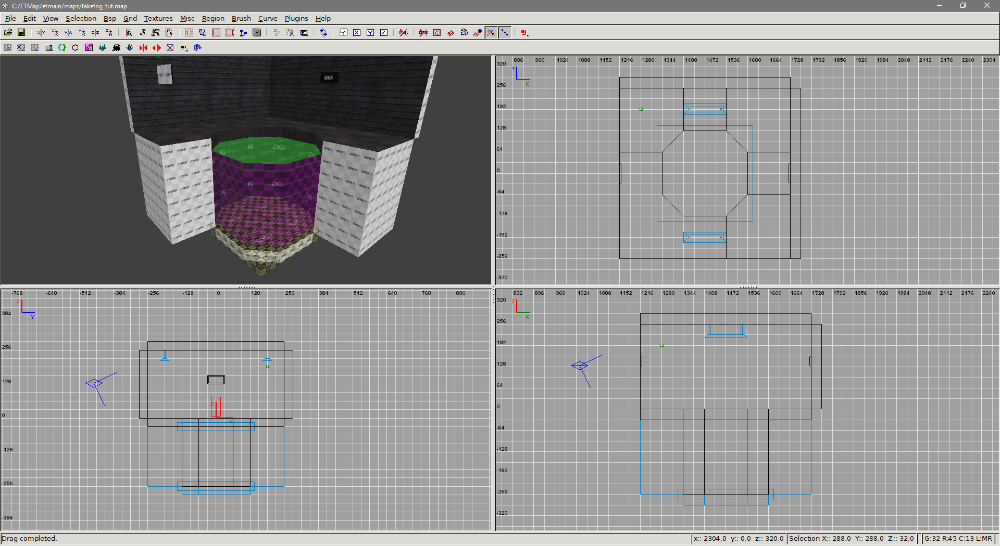
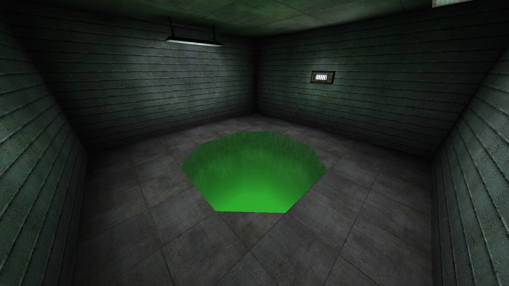
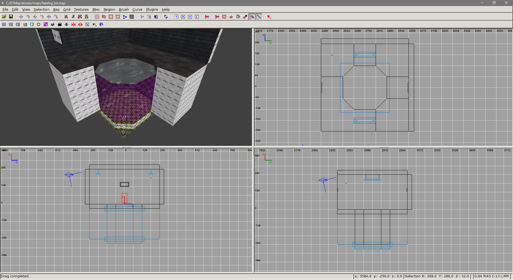
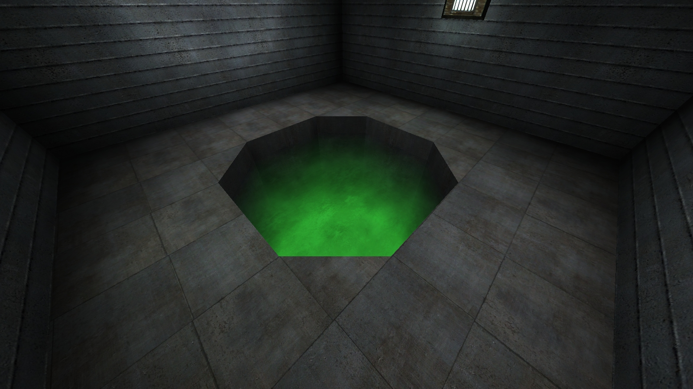
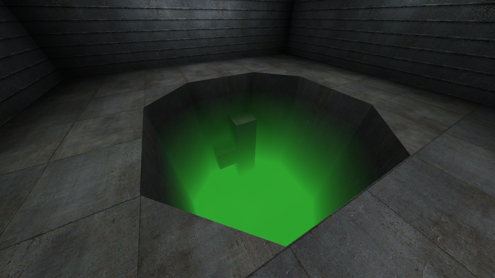

Fake directional fog
This tutorial teaches how to create fake, static directional fog by using whiteimage and alpha
blending. The advantage with this is that the fog always looks the same, regardless of players position of
viewangles; standard fog in ET is distance based with linear fade. Because of this, it's basically unusable
for creating fogpits and such, because the player can often be far enough away from the fog that it turns
fully opaque without any fading. To fix this, the fog shaders distance to opaque parameter would need to be
increased, which leads it to look bad when viewed close up.
This tutorial assumes you have basic knowledge on shaders: what they are and how to create them. It's recommended to check shader manual for shader directives used here if you are unfamiliar with them.
If you aren't familiar with the concept of alpha blending, check out Sock's tutorial here.
If you don't have alphamod shaders, you can grab them at ETJump mapping repository.
You can grab the source files used in this tutorial here.
Standard fading fog
By using whiteimage, a solid white texture can be applied on top of a surface. With
rgbGen and alphamod brushes, it can be recolored and used to create fading effect on surfaces
which are touching the fog.
In the picture above, the walls and floor of the pit are fogged using whiteimage and alpha
blending. The shaders look like this:
// Standard fogged surfaces
textures/fakefog_tut/concrete_m05c_fog
{
qer_editorImage textures/fakefog_tut/ei/concrete_m05c_fog.jpg
surfaceparm nomarks
{
map $lightmap
rgbGen identity
}
{
map textures/miltary_wall/concrete_m05c.jpg
blendFunc GL_DST_COLOR GL_ZERO
rgbGen identity
}
{
map $whiteimage
blendFunc GL_SRC_ALPHA GL_ONE_MINUS_SRC_ALPHA
alphaGen vertex
rgbGen const ( 0.2 0.75 0.2 )
}
}
textures/fakefog_tut/concrete_c07bcmp_fog
{
qer_editorImage textures/fakefog_tut/ei/concrete_c07bcmp_fog.jpg
surfaceparm nomarks
{
map $lightmap
rgbGen identity
}
{
map textures/miltary_wall/concrete_c07bcmp.jpg
blendFunc GL_DST_COLOR GL_ZERO
rgbGen identity
}
{
map $whiteimage
blendFunc GL_SRC_ALPHA GL_ONE_MINUS_SRC_ALPHA
alphaGen vertex
rgbGen const ( 0.2 0.75 0.2 )
}
}
whiteimage creates a solid white image on top of the surface. It is then faded using alphamod
brushes and blendFunc and alphaGen shader directives. Lastly, the color is changed
using rgbGen. surfaceparm nomarks is used to prevent bullet holes in the fog, as
it would look silly.
It's important to note that the whiteimage is the last stage of the shader. This is because
alphamod brushes modify the vertex alpha of the last texture map stage. In Radiant, the surfaces affected by
the fog and alphamod brushes are grouped into func_group. This is to prevent the alphamod
brushes affecting any other surfaces than the group they belong to. Note that if you want the fog to turn
fully opaque at the bottom, it's not necessary to cover the bottom vertices with an alphamod brush, since
the whiteimage doesn't have alpha channel.
Fog with surfacelight
If you want the fog to emit light, first create the fogged area with the standard fog surface shaders as shown above. Then, create a new shader that's used to emit light.
// Surfacelight "fill" shader
textures/fakefog_tut/fog_surfacelight
{
qer_editorImage textures/fakefog_tut/ei/fog_surfacelight.jpg
qer_trans 0.5
q3map_lightImage textures/fakefog_tut/li/li_fog.jpg
q3map_surfaceLight 200
surfaceparm trans
surfaceparm nonsolid
surfaceparm nolightmap
cull none
{
map $whiteimage
blendFunc GL_SRC_ALPHA GL_ONE_MINUS_SRC_ALPHA
alphaGen const 0.0
}
}
In this shader, whiteimage is set to fully transparent with alphaGen const 0.0.
Light is produced with q3map_surfaceLight and the color is set using
q3map_lightImage. Color can also be set with q3map_lightRGB, however it doesn't
affect radiosity light, while lightimage does. The lightimage is just a small texture, colored to match the
color of the fog. It's not necessary to explicitly set q3map_lightImage or
q3map_lightRGB; if neither are present, light color is sampled from editor image, which can be
made to match the color of the fog. It's also recommended to set cull none to create more
uniform lighting.
The reason for using whiteimage here at all is to prevent the surface showing as missing texture in game.
surfaceparm nodraw cannot be used either, since q3map_surfaceLight doesn't work
then.
Create a brush that fills the entire fogged area. Texture the top of this brush with the surfacelight shader,
and rest with nodraw.


Fog with texture
Creating fog with textured top follows the same principle as fog with surfacelight. Create the fogged area normally, then create a brush that fills the fogged area. Create a shader that has the texture you want to show.
// Textured fog
textures/fakefog_tut/fog_texture
{
qer_editorImage textures/fakefog_tut/ei/fog_texture.jpg
qer_trans 0.5
surfaceparm trans
surfaceparm nonsolid
surfaceparm nolightmap
cull none
{
map textures/skies_sd/battery_clouds.tga
blendFunc GL_DST_COLOR GL_ONE
tcMod scroll 0.01 -0.01
rgbGen identity
}
{
map textures/skies_sd/battery_clouds.tga
blendFunc GL_DST_COLOR GL_ZERO
tcMod scroll 0.01 -0.01
rgbGen identity
}
}
This shader doesn't really have anything special. If you want it to emit light, just add
q3map_surfaceLight and optionally set the color using any of the methods described earlier.


Objects inside fog
This is where things get a bit tricky. If you have brushes that are fully inside the fogged area, they have to be faded seperately from the main area. Because the top/bottom vertices aren't necessarily on the same level as the main fogged area, some math is required to get the correct alpha values. The formula for calculating this is following:
alpha = (distanceFromTop / fogHeight) * bottomAlphaMod
A very simple way to get the correct alpha value is to use aspect ratio calculator. Using this tool, set fogHeight as W1, distanceFromTop as H1 and bottomAlphaMod as W2. H2 will be your correct alpha value.
In the example map, bottomAlphaMod is set to 85%. Fogged area is 224 units high, and the relevant distanceFromTop values are pictured above. When inserted into the formula, it gives the following alpha values:
(48 / 224) * 85 = 18
(112 / 224) * 85 = 43
(160 / 224) * 85 = 61
Once the correct alpha values are calculated, create alphamod shaders with the corresponding values.
// Custom alphamod shaders
textures/fakefog_tut/alpha_018
{
qer_editorImage textures/fakefog_tut/ei/alpha_018.jpg
q3map_alphaMod volume
q3map_alphaMod set 0.18
surfaceparm nodraw
surfaceparm nonsolid
surfaceparm trans
qer_trans 0.3
qer_noCarve
}
textures/fakefog_tut/alpha_043
{
qer_editorImage textures/fakefog_tut/ei/alpha_043.jpg
q3map_alphaMod volume
q3map_alphaMod set 0.43
surfaceparm nodraw
surfaceparm nonsolid
surfaceparm trans
qer_trans 0.3
qer_noCarve
}
textures/fakefog_tut/alpha_061
{
qer_editorImage textures/fakefog_tut/ei/alpha_061.jpg
q3map_alphaMod volume
q3map_alphaMod set 0.61
surfaceparm nodraw
surfaceparm nonsolid
surfaceparm trans
qer_trans 0.3
qer_noCarve
}
Place the brushes inside the fog into a seperate func_group together with the alphamod brushes.

Tutorial by Aciz